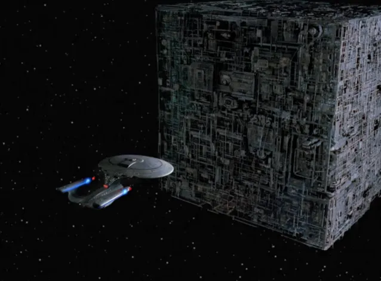
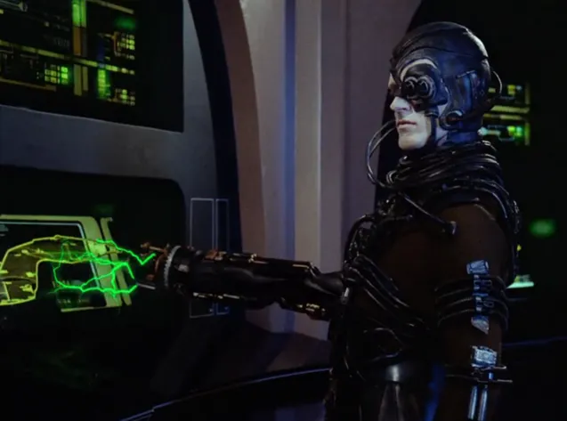
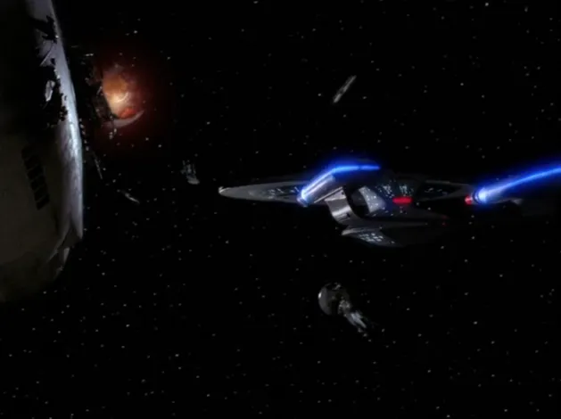
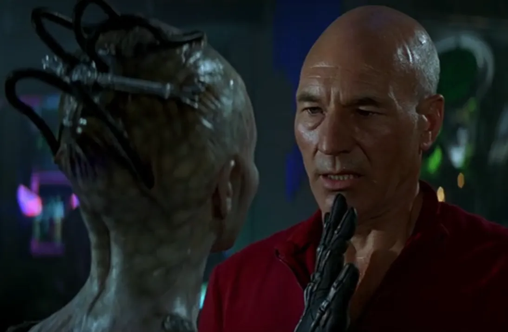
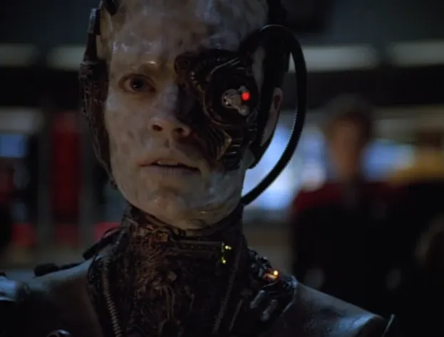
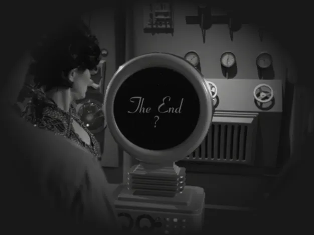

@c6reviews.
@c6reviews.▼ Jump to list of appearances ▼

The Borg first appear in TNG 2x16: Q Who when Q flings Picard's ship and crew a great distance to the Delta Quadrant, where they encounter a large cubical vessel that absolutely dwarfs the Enterprise. Humans would not have otherwise encountered the Borg for many years, so it is thanks to Q that this first encounter was hastened. At first just a curiosity, things start to escalate when the Borg transport a drone to the Enterprise to study it. In this first appearance, the Borg were not fully fleshed-out as a concept, so there are some inconsistencies with what we know the Borg will become in later episodes. Q describes the Borg drone as “Not a he, not a she”, going on to say that it is “not interested in your life form” and is only there to analyze the technology on the ship. Later, Riker finds infants on the Borg ship that have already begun to receive cybernetic implants. All of this suggests that the Borg are a separate and unique biological humanoid species that have merely opted to enhance their biology with cybernetic systems, either intentionally or inadvertently creating the “hive mind” single consciousness.
However, we know from future episodes that the Borg assimilate other species into their collective, not relying entirely on a single population raised to be drones from birth. This would mean that many Borg drones do come from species with sex differences (“a he or a she”), although those differences would likely become irrelevant after assimilation. Still, there may be some truth to Q's description. Since the origin story of the Borg is unknown in the Trek universe, they may have started from a single genderless species (“Species 001”?) and eventually evolved and adapted to start assimilating others.

In fact, we see this assimilation behavior in the very next encounter with the Borg, in TNG 3x26 & 4x01: The Best of Both Worlds when Captain Picard is transformed into a Borg drone with the designation “Locutus”. Doctor Crusher describes him as being “part of their collective's consciousness now. Cutting him off would be like asking one of us to disconnect an arm or a foot”. During this incident, Starfleet and the Klingons mounted an assault on the Borg cube that was now carrying Locutus directly to Earth. This became known as the Battle of Wolf 359, and it would have lasting repercussions for the Federation and its people. Under the control of the Borg collective, Picard (as Locutus) was responsible for the destruction of many ships and the loss of thousands of lives. This would be a trauma that would haunt Picard for many years to come.
Interestingly, during the course of these events, Doctor Crusher brings up the possibility of introducing a “destructive breed of nanites into the Borg” in order to damage, incapacitate, or destroy them. We know from future encounters with the Borg that they, themselves, use a similar technology (called “nanoprobes”) as an essential component to their assimilation and regeneration processes. This was apparently not known to Starfleet at this time, so it's interesting that Crusher happened to suggest the technology as a possible defense.

We dive deeper into what it means to be Borg in TNG 5x23: I Borg, where the Enterprise crew nurse a single Borg drone back to health and plan to use the drone to introduce an invasive program back into the hive mind. Disconnected from the collective, the drone seems lost and confused, unable to process life as an individual. As the crew wrestles with the morality of sending the drone back as an instrument of destruction, Picard uses a similar “body part” analogy as in their previous encounter, saying “There's no one Borg who is more an individual than your arm or your leg.” Doctor Crusher objects to the idea of “annihilating an entire race”, which creates even more confusion around what the Borg are. This would seem to continue to support the idea that the Borg at least originated from a single species of humanoid, even if they did start assimilating others later. If that's the case, there are a lot of innocents among the Borg collective who deserve some consideration, as well. Picard seems to be of the belief that those who have been assimilated are beyond help (this belief is most noticeable in Star Trek: First Contact), even though he, himself, was rescued from the collective and his humanity was restored. His traumatic experience may suggest that there were times he would have preferred someone just put him out of his misery. Ultimately, the crew decide not to use the drone – given the name Hugh by Geordi – as a Trojan horse to destroy the Borg collective, and instead decide to send Hugh back with his new sense of individuality, hoping that that identity might be a force for good when he is reintegrated back into the hive mind.
A year later, in TNG 6x26 & 7x01: Descent, we learn of the consequences of that decision. Unable to cope with the newly-introduced concept of individuality, about 50 Borg drones are rejected by the Borg collective and left to fend for themselves. (This suggests that Crusher's analogy about disconnecting an arm or a foot isn't an especially apt description, at least not in the way she intended. In fact, we can disconnect an arm or a foot, it's just that we can't do it easily or cleanly without a surgical procedure. It seems the Borg are also capable of disconnecting drones from the hive mind when necessary.) Desperate for direction and leadership, the disconnected drones are happened-upon by Data's brother, Lore, who manipulates them into being his own personal henchmen and experimental subjects. After the intervention of the Enterprise crew, the small group of Borg are left to an uncertain future under the leadership of Hugh.

In the film Star Trek: First Contact, Picard must come face-to-face with the trauma he suffered as Locutus, when the Borg travel back in time to 2063 in order to disrupt humanity's first contact with an alien race. During the crisis, we're introduced to a new element of the Borg collective that was previously unknown to the Federation: The Borg Queen. The Queen's relationship to the rest of the collective is a bit enigmatic. Data asks her if she controls the Borg, to which she replies “I am the Borg.” She also says that her role is to “bring order to chaos”, which is quite the cryptic description.
The Borg Queen seems to live slightly outside of our space-time frame, and there's not necessarily just one of them. When Picard says that he thought the Queen was destroyed the last time he encountered her, she chides him for thinking in such “three-dimensional terms”, adding “How small you've become”. In this film, the Queen is played by Alice Krige. The Queen would later be played by Susanna Thompson in Star Trek: Voyager, and most sources agree that these are meant to be the same character/same consciousness despite being played by two different actors. This is more apparent when Alice Krige returns to the role in the Voyager series finale without any in-story explanation. In Star Trek: Picard, another Borg Queen is introduced, played by Annie Wersching, but she is technically from a different timeline/reality. It has been suggested that the Queen's consciousness is a single one that may inhabit several different bodies.
Consequences from this Borg incursion at First Contact in 2063 are felt later, in 2153, as told in the episode ENT 2x23: Regeneration, when two Borg drones are found frozen among their crashed ship debris in the arctic circle. In that episode, Archer says “Look at these biosigns. They're not human anymore” regarding one of the assimilated researchers. This suggests that the assimilation process is not just a matter of implanting technology, but also involves a biological transformation.

Some months after the events of Star Trek: First Contact, the USS Voyager, which had been lost in the Delta Quadrant almost three years prior, finally comes upon the Borg's home turf in VOY 3x26 & 4x01: Scorpion. During this adventure, Captain Janeway and her crew liberate Seven of Nine from the Borg collective, and she becomes a member of the Voyager crew, joining them on their journey while also undertaking a personal journey back to individuality and humanity.
Captain Janeway and her crew would have numerous interactions with the Borg during their long trek back to Earth, including a few run-ins with the Borg Queen, herself. Among their encounters, Janeway forms a daring plan to steal a Borg trans-warp coil in VOY 5x15/16: Dark Frontier, and the Voyager crew exploit a vulnerability among the Borg in an artificial construct known as Unimatrix Zero, in the aptly-named VOY 6x26 & 7x01: Unimatrix Zero.
The rivalry between Janeway and the Borg Queen would come to a dramatic conclusion in the series finale of Star Trek: Voyager, VOY 7x25/26: Endgame, when the Queen must contend with not one, but two Captains Janeway in a final battle that would leave the entire Borg collective crippled and broken. Janeway infects the Borg collective with a neurolytic pathogen which spreads throughout the hive mind, disabling drones and ships, and leaving the future of the Borg to be uncertain, at best.
Following the events of VOY 7x25/26: Endgame in 2377, the Borg collective is in shambles, leaving non- and barely-functioning ships and drones strewn throughout the galaxy. This is evidenced in PRO 1x12: Let Sleeping Borg Lie when the gang come across a disabled Borg cube in 2384, and again in 2401 when Agnes Jurati says “The Borg we know have been effectively decimated, functionally hobbled” in PIC 2x01: The Star Gazer. She's rightfully confused, since in that series premiere, a gigantic Borg vessel suddenly appears making requests and demands. So where did this ship come from?
(SERIOUSLY, SPOILERS HERE!) Well, it turns out that THIS ship exists due to some time-travel tomfoolery. Once all the events of Season 2 of Picard play out, we learn that a hybrid Agnes Jurati / Borg Queen sets course for the Borg's home from Earth, way back in 2024, and by 2401 she had control of a Borg collective. At the time this season ended, it was a bit unclear if she controlled the entire Borg collective as we know it, effectively rewriting their history, or if she only controlled a separate collective – a Borg sect, if you will. In the season finale, that group of Borg are left in Federation space to monitor and defend the big bad wormhole thingy that had just been created, and we never really hear from them again.
(I'M NOT KIDDING, THESE ARE BIG SPOILERS!) Then, just a few months later in Season 3 of Picard, Beverly Crusher says that the Borg hadn't been heard from in decades (in PIC 3x09: Võx). This seems to further support the idea that the original/bad Borg still exist and were hobbled by Janeway, while the separatist/good Borg led by Jurati are something independent from the main collective – and that Beverly was referring only to the original bad guys. Indeed, this is pretty much confirmed when the Borg seen in the series finale of Picard are led by the original Borg Queen, first seen in Star Trek: First Contact (and voiced by the same actor, Alice Krige).
In the series finale of Star Trek: Picard, one last battle is waged between Picard and the Borg Queen, along with the final remnants of the collective. Picard is victorious, perhaps finally putting an end to the collective, as well as giving closure to his long, traumatic experience with the Borg. But, this is Star Trek after all, so anything could happen!

All Appearances of The Borg
Role column
| P | Primary | the Borg play a primary role in these episodes. |
| S | Secondary | the Borg play a smaller but still significant role in these episodes. |
| M | Minor | the Borg in these episodes do not play a significant role. |
| VM | Very Minor | the Borg appear in a very minor way, like as a background character or for only a few seconds. |
Note: Episodes in Star Trek: Picard are part of 10-episode season-long story arcs. You should watch entire seasons for the full story, not just individual episodes.
* The recommendation column in this table is based on which episodes are the most important for learning more about the Borg. These recommendations do not necessarily match the recommendations made on the individual series' episode guides.
** Ratings are relative to the series in which the episode belongs.
There are two appearances of the Borg that are omitted from this table because listing them here would be a pretty big spoiler. Even mentioning the series might give too much away. If you want to display the hidden rows, you should first click this spoiler tag to get a hint about when the mystery appearance might occur: Spoiler » You should NOT reveal the hidden appearances of the Borg if you have not watched ALL of Star Trek: Picard. If you're still sure you want to reveal the hidden entry in this table, click this spoiler tag and the confirmation button: I am sure! »
|
|
|
|||||||
| Release Date ↿⇂ | In-Universe Year ↿⇂ | Role ↿⇂ | Series ↿⇂ | Episode ↿⇂ |
Title ↿⇂ |
Notes ↿⇂ | Recommendation* ↿⇂ | Rating** ↿⇂ |
|---|---|---|---|---|---|---|---|---|